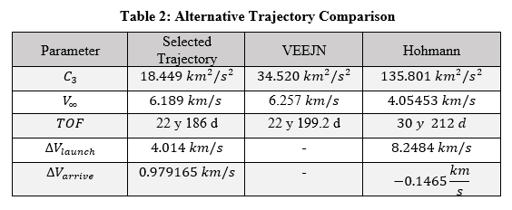
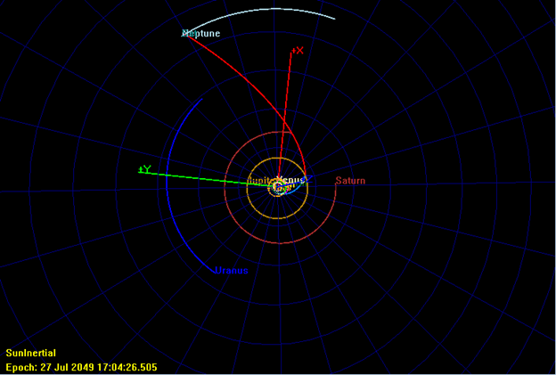
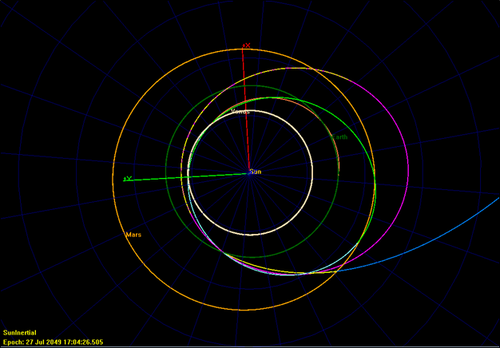
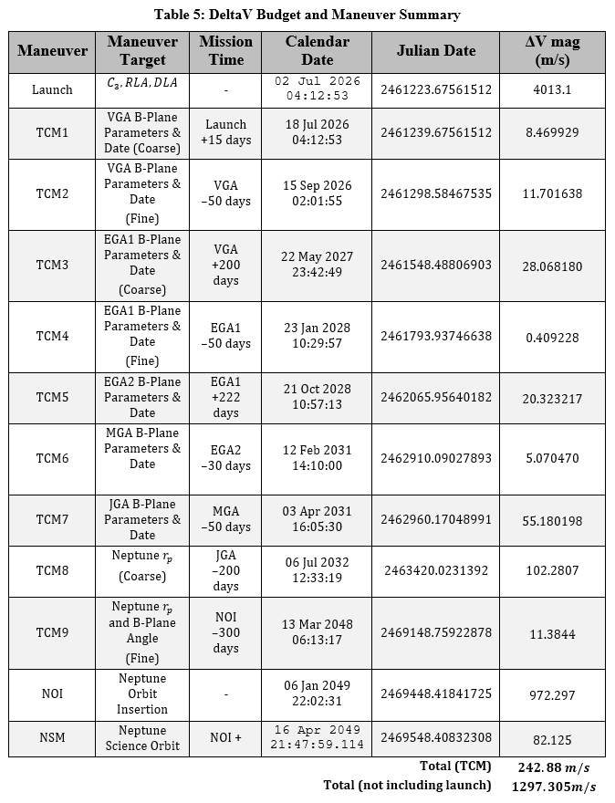

Interplanetary Searching Algorithm
Searching for optimal interplanetary flyby orbits using particle swarm optimization
Objective
Coupling many successive planetary flybys is often the best way for exploration missions to reach the outer gas giants. When looking at a valid trajectory design the launch C3 energy (C3), the time of flight (TOF), and the incoming velocity at the target (Vinf) need to be considered. The goal is to minimize these parameters so the mission reduces fuel usage at launch and arrival while ensuring the mission's length remains reasonable.
The objective of this project was to create a set of MATLAB programs that will accept a certain sequence of planets over a specified searching window. The program will then search within that space for valid trajectories that minimize the C3, TOF, and Vinf. The specific searching algorithm is important as valid launch windows are relatively small compared to an open searching space and are computationaly expereince to brute force a solution. One desired requirement was to make changing the sequence of planets straightforward and be able to adapt to different types of flybys including resonant orbits and multi-revolution Type 3/4+ orbits.
Design
There are many constraints that are placed when identifying these trajectories. The state variables are the dates for each planetary flyby including launch and arrival. A Lambert's problem solver is used to find the trajectory between each event. Two successive solutions (i.e. one flyby) are used to validate the specific state by ensuring that the two trajectories patch together for an unpowered flyby.
A cost function is used to compare each set of flyby dates and the optimizer will adjust the state variables to minimize this cost. The function takes into account invalid trajectories by heavily penalizing them. Invalid trajectories are where the flyby Vinfity does not match for a powered flyby, the flyby intersects the surface of the planet (not ideal), or the trajectory has too high of a C3, TOF, or arrival Vinf.
A particle swarm optimization algorithm was used to search the state space for the optimum solution. The initial state for each particle is randomized and when the optimizer initializes it places 2000 of these particles throughout the entire search space. It evaluates the cost function at each particle and then adjusts their state depending on the cheapest global particle's cost, the cheapest particle's cost in their local group, as well as each particle's cost history. This creates a swarm of particles searching for the minimum cost in the state space, similar to a swarm of insects interacting with one other while searching for the lowest hill. If the particles do not find a valid trajectory within enough iterations, the process will restart and places a new 2000 random particles into the search space to try again.
Neptune Trajectory
The end goal of this MATLAB program was to identify a trajectory to Neptune. After trying several mission designs by changing the order, number, and type of flybys, the final mission design found was a Venus-Earth-Earth-Mars-Jupiter-Neptune (VEEMJN) trajectory. The Earth-Earth leg is a 3:2 resonant Earth orbit where the satellite will take exactly 3 years to orbit twice around the sun meeting back with the Earth at the same location. There is also a multiple revolution Type-III trajectory to the first Earth flyby, rotating around the sun one complete time before reaching the Earth.
This is where the emphasis on the input system provided beneficial, as it allowed me to rapidly try many different orbit designs. I was also able to find a valid VEEJN trajectory, which launched later and did not use Mars to build up additional speed. By looking at the parameters of the trajectory, the final VEEMJN was compared to this alternate VEEJN trajectory as well as the reference Hohmann transfer going directly between Earth and Neptune.
Compared to the Hohmann transfer the VEEMJN trajectory, while more complex, would provide significantly better results. By taking advantage of many gravity assists the VEEMJN trajectory is able to drastically reduce the launch cost as well the time of flight. It is also better than the alternative VEEJN trajectory since the selected trajectory not only uses less fuel for launch but also arrives slightly earlier as shown by the C3 and TOF. Overall, this final trajectory appears to be a minimized solution when looking at launches to Neptune.
Modeling in GMAT
 Then, this entire VEEMJN trajectory from launch to final science orbit was modeled in GMAT to validate the result from the MATLAB program. Many targeting maneuvers were used to simulate a real mission design. Two Trajectory Correction Maneuvers (TCMs) per flyby were planned to ensure that the spacecraft's trajectory maintains the correct path. These targeters targeted the appropriate B-plane parameters and the date of each flyby. By using backwards propagation, the maneuvers are adjusted to target the B-Plane parameters of the next flyby. This process is summarized in the table below.
Conclusions
This project gave me great experience in working with complex trajectory design and modeling a mission fully in GMAT. The MATLAB program contained several supporting functions, including a robust Lambert problem solve that can find multiple revolution solutions, a resonant orbit solver, solving for B-plane parameters, and using Meeus algorithm to find the position and velocity of the planets at a given date. Since the cost function is run many times, the program was optimized as best as possible to reduce the computational time taking advantage of MATLAB's vectorization where applicable. I really did enjoy implementing optimization techniques and overcoming the many challenges related to programming this problem in MATLAB. If nothing else, modeling this trajectory in GMAT certainly gave some pretty cool looking figures.